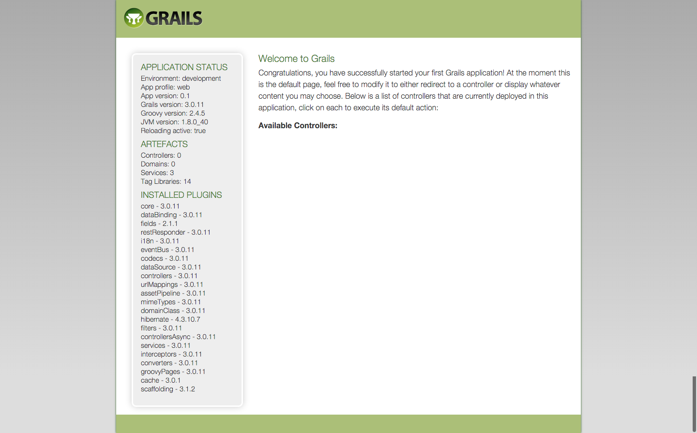

2.1.Grailsアプリケーションの作成
さて、まずはGrailsアプリケーションを作成していきます。
前提条件： JDK8、Grails3.0.11がインストールされていること。
また、Grailsは基本的にコマンドラインを使って様々なコマンドを実行していきます。
コマンドラインに慣れていない方は少し戸惑うかもしれませんが、慣れてしまえばどうということはありません。
頑張って進めていきましょう！
2.1.1.アプリケーションを作成
Grailsのアプリケーションを作成するには、grails create-app アプリケーション名を実行します。
そのコマンドを実行したディレクトリに、指定したアプリケーション名のディレクトリが作成され、その中にGrailsのすべてのファイルが格納されています。
それでは早速Grailsアプリケーションを作成しましょう！
今回はhello_grailsというアプリケーション名にしましょう。
grails create-app hello_grails
コマンドを実行すると、
| Application created at /Users/koji/IdeaProjects/hello_grails
と表示されます。
ではhello_grailsディレクトリの中に移動しましょう！
[koji:IdeaProjects]$ cd hello_grails/
以降、このhello_grailsをアプリケーションホームと記述してきます。
なお、私のこのテスト環境では、このアプリケーションホームのフルパスは/Users/koji/IdeaProjects/hello_grailsとなっています。
もしこのチュートリアル内でアプリケーションホーム/hoge.txtのような記述があった場合、/Users/koji/IdeaProjects/hello_grails/hoge.txtと同等です。
さて、アプリケーションホームの中身は現在、デフォルト状態で以下のようになっています。
├── build.gradle
├── gradle
│ └── wrapper
│ ├── gradle-wrapper.jar
│ └── gradle-wrapper.properties
├── gradle.properties
├── gradlew
├── gradlew.bat
├── grails-app
│ ├── assets
│ │ ├── images
│ │ │ ├── apple-touch-icon-retina.png
│ │ │ ├── apple-touch-icon.png
│ │ │ ├── favicon.ico
│ │ │ ├── grails_logo.png
│ │ │ ├── skin
│ │ │ │ ├── database_add.png
│ │ │ │ ├── database_delete.png
│ │ │ │ ├── database_edit.png
│ │ │ │ ├── database_save.png
│ │ │ │ ├── database_table.png
│ │ │ │ ├── exclamation.png
│ │ │ │ ├── house.png
│ │ │ │ ├── information.png
│ │ │ │ ├── shadow.jpg
│ │ │ │ ├── sorted_asc.gif
│ │ │ │ └── sorted_desc.gif
│ │ │ └── spinner.gif
│ │ ├── javascripts
│ │ │ ├── application.js
│ │ │ └── jquery-2.1.3.js
│ │ └── stylesheets
│ │ ├── application.css
│ │ ├── errors.css
│ │ ├── main.css
│ │ └── mobile.css
│ ├── conf
│ │ ├── application.yml
│ │ ├── logback.groovy
│ │ └── spring
│ │ └── resources.groovy
│ ├── controllers
│ │ └── UrlMappings.groovy
│ ├── domain
│ ├── i18n
│ │ ├── messages.properties
│ │ ├── messages_cs_CZ.properties
│ │ ├── messages_da.properties
│ │ ├── messages_de.properties
│ │ ├── messages_es.properties
│ │ ├── messages_fr.properties
│ │ ├── messages_it.properties
│ │ ├── messages_ja.properties
│ │ ├── messages_nb.properties
│ │ ├── messages_nl.properties
│ │ ├── messages_pl.properties
│ │ ├── messages_pt_BR.properties
│ │ ├── messages_pt_PT.properties
│ │ ├── messages_ru.properties
│ │ ├── messages_sv.properties
│ │ ├── messages_th.properties
│ │ └── messages_zh_CN.properties
│ ├── init
│ │ ├── BootStrap.groovy
│ │ └── hello_grails
│ │ └── Application.groovy
│ ├── services
│ ├── taglib
│ ├── utils
│ └── views
│ ├── error.gsp
│ ├── index.gsp
│ ├── layouts
│ │ └── main.gsp
│ └── notFound.gsp
└── src
├── integration-test
│ └── groovy
├── main
│ ├── groovy
│ └── webapp
└── test
└── groovy
なんだかいろいろありますね。
全ておいおい見ていけばわかってきますので今は得にきにする必要はありません。
2.1.2.Grailsの起動
まず、コマンドライン上でアプリケーションホームに移動しておいてください。
続いて、以下のコマンドを実行します。
grails
grailsコマンドだけを実行すると、 インタラクティブモード に入ります。
これで、毎回grailsと入力しなくても、続くオプションコマンドのみ入力すれば良くなります。
また、コマンドの実行自体も早くなります。
いろいろ画面に文字が現れるのでびっくりするかもしれませんが、Grailsに必要なライブラリなどが自動的にダウンロード、設定されています。
初めてGraislを実行する際にはこのように若干時間がかかります。休憩しながらしばらく待ちましょう。
さて、すべての作業が完了したら、コマンドプロンプトは以下のような表示になっています。
grails>
このように表示されていたら、現在インタラクティブモードということです。
ではいよいよGrailsを起動します!!
以下のコマンドを実行してください。
run-app
以下のようなメッセージが表示されます。
grails> run-app
| Running application...
Grails application running at http://localhost:8080 in environment: development
grails>
これでGrailsが起動できました。
http://localhost:8080にアクセスしてみましょう。
以下のような画面が表示されるはずです。

おめでとうございます！
これでGrailsアプリケーションを作成することができました！
それでは、Grailsを停止してみましょう。 インタラクティブモード状態のコマンドプロンプト上で、以下のコマンドを実行します。
stop-app
以下のようなメッセージが表示されれば正常にGrailsが停止できています。
grails> stop-app
| Shutting down application...
| Application shutdown.
grails>